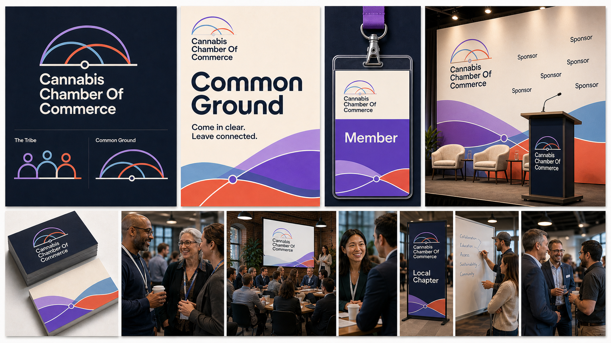
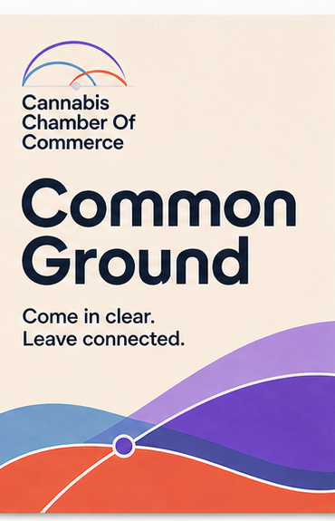
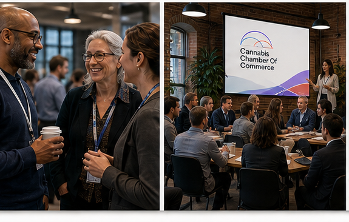
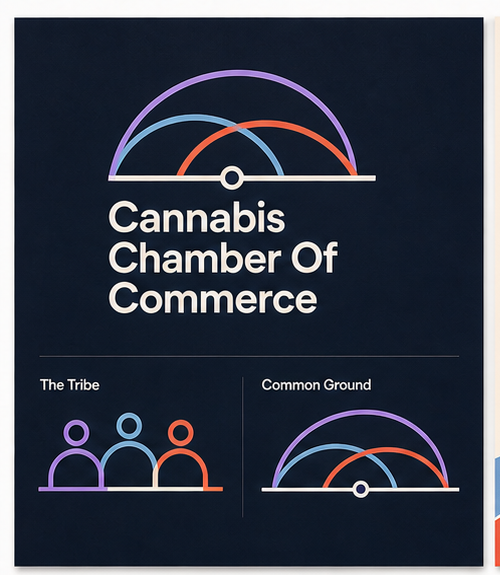
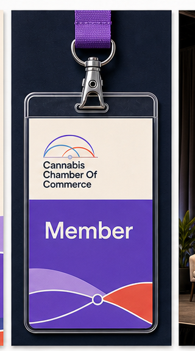
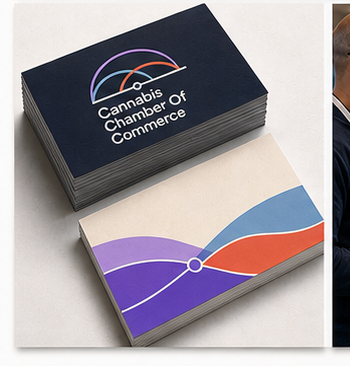

Event flyer
Regional workshop, newcomer session, or member gathering promotion.

Flyers should feel calm and human, but still specific about the business value.
soft arcsclear routepractical warmth
A calm, human, emotionally open direction for professionals who want to enter or participate in cannabis business without feeling unserious. It is community-led, but still standards-led.
This raster board is the lead creative artifact for the direction: logo exploration, mood, event flyer, member credential, sponsor backdrop, business card, and environmental cues in one generated system.

The Tribe makes the Chamber feel like a place of orientation. Operators, ancillary providers, sponsors, and newcomers can find common ground, learn the room, and build relationships without the design becoming soft wellness or vague belonging.
Membership onboarding, regional chapters, education, newcomer pathways, community events, and long-term trust building.
If it leans too soft, it loses Chamber authority. It must make belonging practical: roles, routes, event formats, and standards stay visible.
Belonging with a standard. The Chamber gives people a way in and a way to carry themselves once they arrive.
The direction is treated as a brand system, not a palette. These are the decisions a flyer, badge, backdrop, sponsor deck, and website would all inherit.
The Chamber as common ground for different kinds of cannabis professionals.
Regional workshop, member circle, education table, sponsor welcome wall, and quiet follow-up conversation.
Warm, grounded, clear, and peaceful without being sleepy.
Use thread, arcs, and layered paths to show connection with boundaries.
Come in clear. Leave connected.
Not wellness cannabis, not earthy leaf symbolism, not generic community softness.
The slider positions are the design contract for this option. They are different enough that each direction should generate a different event system.
New local reference images generated for this pass. They are not copied from the archive and are meant to teach composition, material, energy, and event context.



Proposed identity ingredients stay scoped inside this page until a direction is approved. The surrounding Brand OS shell is neutral review chrome.
Urbanist, rounded enough to feel open but structured enough for business.
Atkinson Hyperlegible, accessible, plain, and calm for education and onboarding.
Best for membership journeys, chapter pages, event onboarding, educational guides, and community proof.
A layered arc and thread system. It connects people without using cultural motifs, leaves, or wellness symbolism.

Generated logo and signature conceptsThe real test is whether the direction can run an event organization: promote an event, identify people, give sponsors visibility, and make the Chamber feel credible in someone's hand.
Regional workshop, newcomer session, or member gathering promotion.
Accessible event badge that helps newcomers and operators identify each other without status anxiety.

Sponsor and chapter backdrop for workshops, panels, and welcome photos.
Membership team, chapter host, and education lead card system.

These notes define the first downstream artifacts if this direction is selected for a proper identity build.
A join-and-attend path that explains what happens before, during, and after the first event.
Local leader templates for workshop flyers, sponsor walls, badges, and follow-up notes.
A recurring content wrapper for practical industry orientation without overclaiming mentorship products.
These are the first constraints a future website or campaign generator should load if this direction is selected.